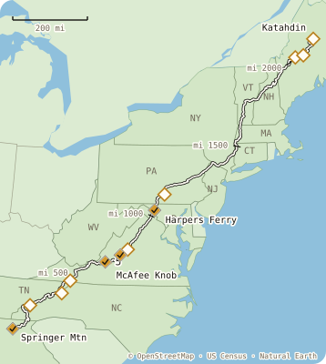

A.T. Summer Bucket List · ATC
Where your blazes are
Nine earned on the trail, three at home. Where stays on this phone.

earned
on your card
walked
Georgia
Visit the A.T.'s southern terminus at Springer Mountain.Springer Mtn · mi 0.0
Apr 12
Virginia
Triple Crown · Dragon's ToothDragons Tooth Peak · mi 703.1
Jul 12
Sign the shelter logbook.Campbell Shelter · mi 713.0 · from your walk
Jul 13
Watch the sunrise from the Trail.McAfee Knob Summit · mi 714.9 · 6:12 am
Jul 14
Triple Crown · McAfee KnobMcAfee Knob Summit · mi 714.9
Jul 14
Take a photo of a white blaze.Near Tinker Cliffs · mi 719.6 · your photo
Jul 15
Cross the James River Footbridge.James River · mi 787.9
Aug 2
West Virginia
Visit the Harpers Ferry Visitor Center.Harpers Ferry · mi 1,026.5 · off the trail
Aug 9
Not on the trail
Trivia quiz · at home
PCT hang · at home
Green Tunnel · at home
Also on your card
Kuwohi · TN
Priest Shelter · VA
Pine Grove Furnace · PA
Katahdin · ME
+6